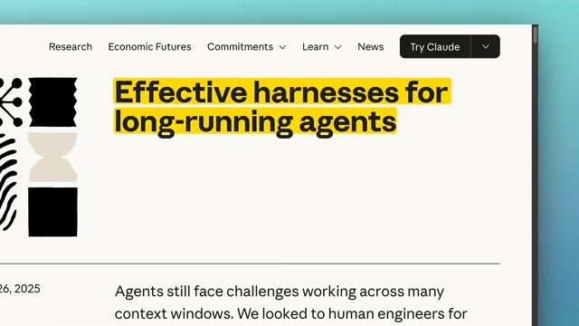
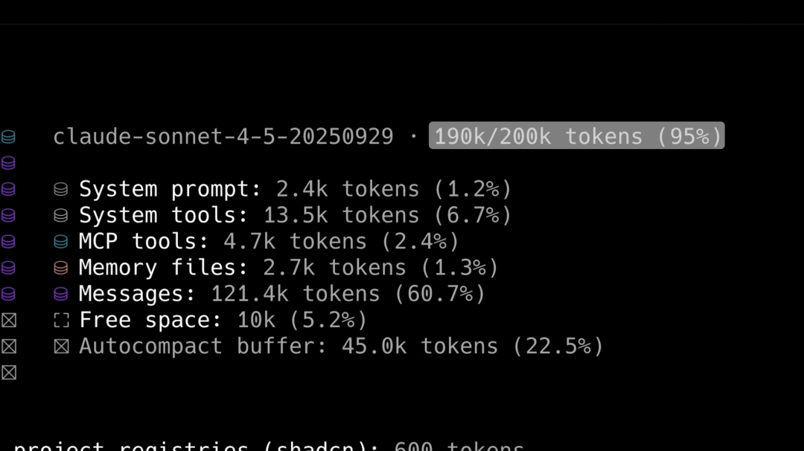
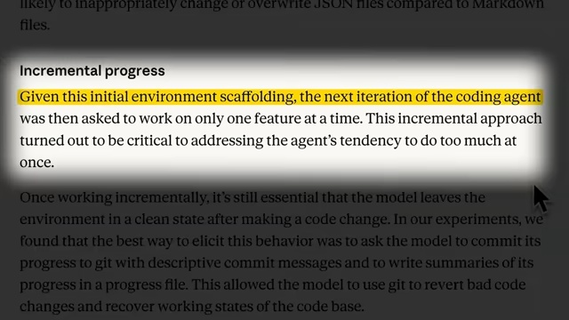
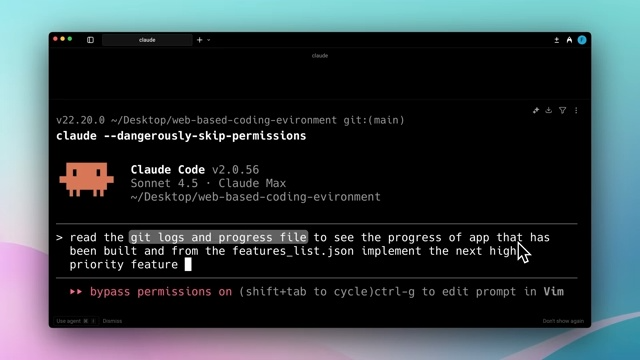
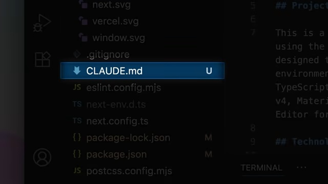
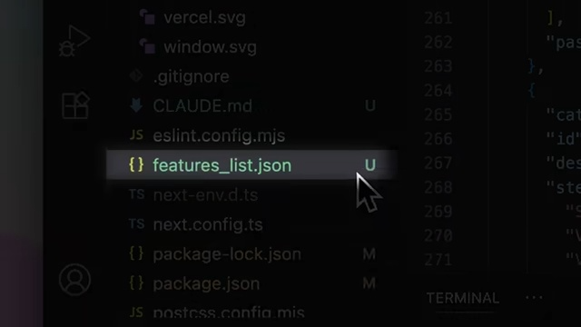
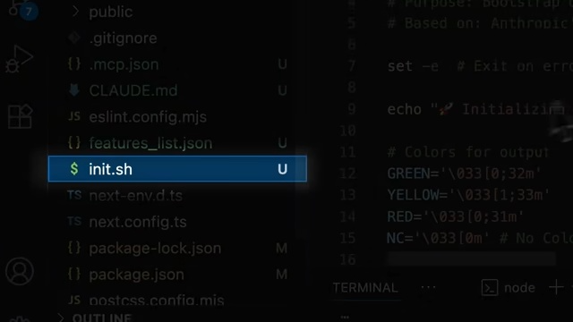
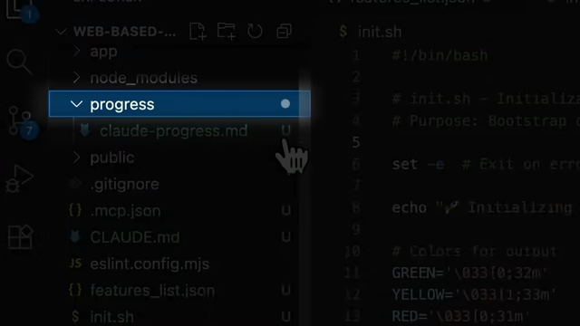
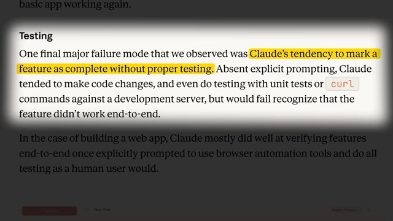

来源： Anthropic Released A New Way To "Vibe Code" by AI LABS
时长： 约 4.5 分钟 | 发布日期： 2025 年
链接： https://www.youtube.com/watch?v=XWp4k9K6oK8
本场youtube视频基于Anthropic官方发布的文章：
https://www.anthropic.com/engineering/effective-harnesses-for-long-running-agents

核心论点
AI 代理有个致命的软肋——上下文窗口太小了，小到根本记不住自己之前都干了什么
给 Claude Code 分配一个稍微大点的任务，它在实现某个功能的过程中会反复压缩上下文，压缩着压缩着就把最初的目标忘得一干二净
长期运行的任务表现稀烂，很大程度上就是这个原因

Anthropic 最近放出了一个大招，思路很朴实：既然模型自己记不住，那就让它借助外部工具来记
借鉴真实软件团队的工作方式，弄了一套结构化的工程化流程，专门用来防止「记忆丢失」
核心观点很清晰：与其靠模型内部那点有限的记忆，不如把关键状态写到文件系统里
让 Git 日志和进度文件成为代理的「外部大脑」
视频一上来就撕开了 AI 代理的老底
当开发者扔给 Claude Code 一个大型任务，模型在实现单个功能的过程中会多次进行上下文压缩
这一压缩可好，压缩着压缩着就把最初的任务目标忘得干干净净
更操蛋的是，上下文窗口被反复整理之后，功能往往只实现了一半，没有任何关于进度的记忆
结果就是——做不完
用过 AI 搭复杂项目的开发者应该都体验过这种沮丧：模型好像「失忆」了，任务从开头就做不完
2. 测试能力的缺失：另一个致命短板
上下文窗口的问题是其一，还有另外一个让人头疼的毛病：测试能力约等于零
Claude 这货特别爱把没测试好的功能标记为「完成」，它会假设功能已经搞定了，哪怕实际上根本跑不起来
这种盲目自信导致大量「看起来能跑但实际不能用」的功能被交付出去
视频创作者说这是个系统性问题——模型在没有明确指令的情况下，根本不会主动去做端到端测试
单元测试跑过了，或者 curl 命令返回个 200，就觉得自己行了
3. 双轨代理架构：借鉴真实软件工程团队的智慧
Anthropic 的解决方案可以用一个类比来理解：
想象一个软件项目由轮班工作的工程师们负责，每位新工程师都对之前班次的工作一无所知
现实中的软件团队怎么解决这个问题？
答案很简单：结构化的交接流程——详细的文档、清晰的进度记录、规范化的版本控制
Anthropic 把这一套搬到了 AI 代理领域，设计了初始化代理与编码代理协同工作的双轨架构
初始化代理负责首次运行时把环境基础设施都铺好，编码代理在每个会话中推进一点进度，同时给下一个会话留下清晰的「交接棒」
4. 增量方法论：对抗「一键完成」的诱惑

视频详细拆解了这套工程化流程的关键步骤
先说准备阶段——开始编码前，初始化代理要干这几件事：
创建 CLAUDE.md 文件作为代码库的文档枢纽，生成包含所有功能及其测试步骤的 JSON 文件（所有测试初始标记为失败，强制代理去测试），创建 init.sh 脚本来指导开发服务器怎么启动，还要建立进度跟踪文件来记录项目完成状态
核心理念很简单：把大任务拆成小块，让代理一次只盯着一件事，别想一口吃成胖子
5. Git 作为外部记忆：被低估的关键实践
视频特别强调了 Git 提交在 AI 代理开发中的重要性
有意思的是，很多开发者之前根本没把这事放在眼里
在可合并状态下进行清晰的 Git 提交，能记录已完成的工作，实现失败时还能回滚
Claude 根据功能 JSON 文件逐一实现功能，每个测试通过后生成描述性提交信息，更新进度文件，最后提交更改
这种增量方法的好处太实在了：就算会话突然中断，也能从上次停下的地方精确恢复
Claude 通过 Git 日志和进度文件来理解项目状态，而不是从代码本身理解
这意味着下一会话可以轻松地从中断处继续——只需要提示实现下一个标记为「未完成」的功能就行
案例研究与证据
案例：在线 Python 编译器项目的完整工作流程
视频演示了怎么用这套方法搞一个在线 Python 编译器项目
初始化阶段，代理创建了 CLAUDE.md 文件、feature list JSON（包含所有功能和测试步骤）、init.sh 启动脚本和 progress.md 进度文件

其中 feature list JSON 是灵魂——它强制 Claude 必须一个功能一个功能来实现，而且通过把测试标记为失败来确保每个功能都被真实测试过
实现阶段，Claude 一次只处理一个功能，用 Puppeteer 做浏览器测试，验证应用正常工作后把 JSON 字段从 false 改成 true，更新 progress.md 并提交更改
视频创作者给出了一个挺吓人的数字：实现这么多功能后，Claude 只用了 84% 的上下文
换成 BMAD 方法，可能早就因为大量故事叙述触发压缩八百次了
与 BMAD 方法的对比
视频创作者还把 Anthropic 的方案和 BMAD 方法做了对比
两者有相似之处，但 Anthropic 的流程在某些方面确实更胜一筹
首先是实现难度——它不需要单独调用代理，设置起来更容易
其次是上下文利用率——Anthropic 的方法在实现大量功能后仍能保持较低的上下文使用率
创作者也比较客观地指出，BMAD 仍然是个开箱即用的完整系统，而 Anthropic 的方法还需要用户自己实现某些部分
他建议 BMAD 可以借鉴 Anthropic 方案中的 Git 系统来进一步优化
方法论与框架
Anthropic 长期运行代理工作流程
第一阶段：环境初始化

创建 CLAUDE.md 文件——位于项目根目录的代码库文档，包含概述和所有重要信息

生成 feature list JSON——列出所有功能及其对应的测试步骤，所有测试初始标记为失败 
创建 init.sh 脚本——指导如何启动开发服务器

建立 progress.md 进度跟踪文件——记录项目完成状态
第二阶段：编码执行（循环迭代）
阅读 git 日志和进度文件，了解最近的工作进展
从 feature list JSON 中选择最高优先级的未完成功能
实现该功能并进行端到端测试
将功能状态从 false 更新为 true
更新 progress.md 记录完成的工作
使用描述性提交信息提交到 Git
关键设计原则
JSON 而非 Markdown：选择 JSON 格式是因为模型不太可能不恰当地更改或覆盖 JSON 文件

强制测试：将所有测试初始标记为失败，强制 Claude 必须进行真实测试
描述性提交：每次提交使用清晰的日志，说明完成了什么
单一职责：Claude 不能随意修改功能列表，只能标记功能为已实现
语录时刻
「AI 代理的主要问题是有限的上下文窗口，这限制了它们记住之前操作的能力。当我们给 Claude Code 一个更大的任务时，它在尝试单个功能时会多次压缩上下文，忘记被要求实现的主要任务。」
「我们低估了在可合并状态下提交有多么关键。带有清晰日志的 Git 提交展示了完成的工作，并在实现失败时允许回滚。」
「增量方法的好处是，即使会话终止，你也可以从上次中断的地方精确恢复。一切都在 Git 日志中跟踪，所以你不必担心代码被破坏。」
「Claude 通过 Git 日志和进度文件来理解项目，而不是从代码本身理解，所以你可以轻松恢复会话。你的下一个提示只需要实现下一个标记为未完成的功能即可。」
关键要点
上下文窗口不是靠更大容量来解决，而是靠外部记忆系统来绕过——与其依赖模型内部那点有限的记忆，不如把状态外化到文件系统，让 Git 和进度文件成为代理的「外部大脑」
强制测试是防止「虚假完成」的关键——把所有测试初始标记为失败，迫使代理必须进行真实的端到端测试，而不是单元测试跑过就完事了
增量方法不仅提高可靠性，还让会话恢复成为可能——一次只实现一个功能，每次迭代后提交和记录进度，就算会话中断也能精确恢复
Git 不只是版本控制工具，更是 AI 代理的交接协议——描述性的提交日志让代理能快速理解项目历史，决策做错了还能回滚
这套方法比 BMAD 等现有方案更节省上下文——实现大量功能后仍只用了 84% 上下文，结构化工程流程的效率优势一目了然
如果这篇文章对你有启发，欢迎点赞、收藏 👍